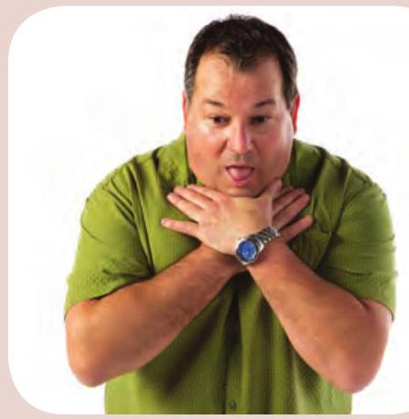
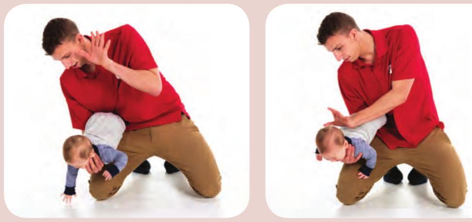
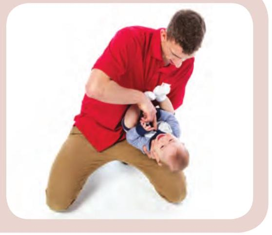

4 Choking
If the person is able to cough or speak, his or her airway is not completely blocked. Encourage the person to cough and be prepared to provide care if the person stops coughing. If the person's airway is completely blocked, you must begin first aid immediately.
Adult or Child
Call
Immediately begin providing care. Call EMS/9-1-1 as soon as you or a bystander is able to do so.
Care
- Alternate between any two of the following methods until the object comes out: back blows, abdominal thrusts, and chest thrusts. 
- If the choking person becomes unresponsive, ensure that EMS has been called and begin CPR, starting with chest compressions.
BACK BLOWS
- Place your arm across the person's chest.
- Bend the person forward and deliver up to 5 firm blows between the shoulder blades.
ABDOMINAL THRUSTS
- Place your fist just above the belly button.
- Give up to 5 quick, inward and upward thrusts.

CHEST THRUSTS
- Place your fist in the middle of the person's chest with your thumb facing inward, and place your other hand over your fist.
- Give up to 5 chest thrusts by pulling straight back.
IF YOU ARE BY YOURSELF AND CHOKING
- Dial EMS/9-1-1 and move to a place where you can be noticed.
- Attempt to dislodge the object by performing abdominal thrusts against a safe object.
Baby
Call
Immediately begin providing care for choking. Call EMS/9-1-1 as soon as you or a bystander is able to do so.
Care
- Sit or kneel with the baby face down along your forearm, holding the jaw in your hand but keeping the mouth clear.
- Deliver 5 firm back blows. 
- If the object does not come out, flip the baby face up, ensuring you support the head.
- Place 2 fingers in the middle of the chest and deliver 5 firm chest compressions. 
- Repeat the back blows and chest compressions until the object comes out or the baby begins to breath normally or cry.
- If the baby becomes unresponsive, immediately begin CPR, starting with chest compressions.